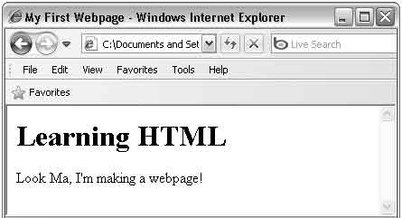

Let’s make the web page a little more eye catching by adding a large, bold heading using the heading tags:
<h1> </h1>
Remember from the previous lesson, things which appear on web pages are enclosed between the opening and closing body tags, that also includes other tags which affect how things are seen on web pages:
<body>
<h1>Learning HTML</h1>
</body>
The number 1 beside the letter
h determines how large the heading will be. Any number from 1 to 6 can be used, 1 makes the largest heading, and 6 makes the smallest.
Heading tags belong to what are called “block” tags. These kind of tags don’t allow any outside text to line up beside them, you will see the effect in a moment but first let’s see how our HTML file is shaping up:
<html>
<head>
<title>My First Webpage</title>
</head>
<body>
<h1>Learning HTML</h1> Look Ma, I'm making a webpage!
</body>
</html>
Open your web page and this is what it should look like:

See how the text outside the h1 tags is on a separate line? This is what block tags do, they force the stuff they don’t enclose to be on a separate line. Another block tag is the paragraph tag:
<p></p>
Any text put between the opening and closing p tags makes one paragraph.
Hitting the “Enter” key has no effect on web pages, to start a new line within a paragraph the
br tag is needed:
<br>
The br tag is one of the few HTML tags which does not have a corresponding closing tag. These kind of tags are called “single” tags. Here is an example of how the br tag can be used in a paragraph:
<p>Look Ma,<br>I’m making a webpage!</p>
The result would look like this:
Look Ma,
I’m making a webpage!
Designed by Kashish Gupta, Hargun Singh, Karan Verma.